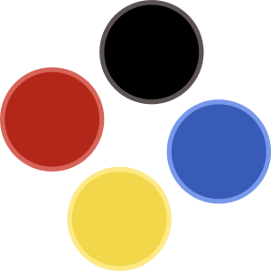
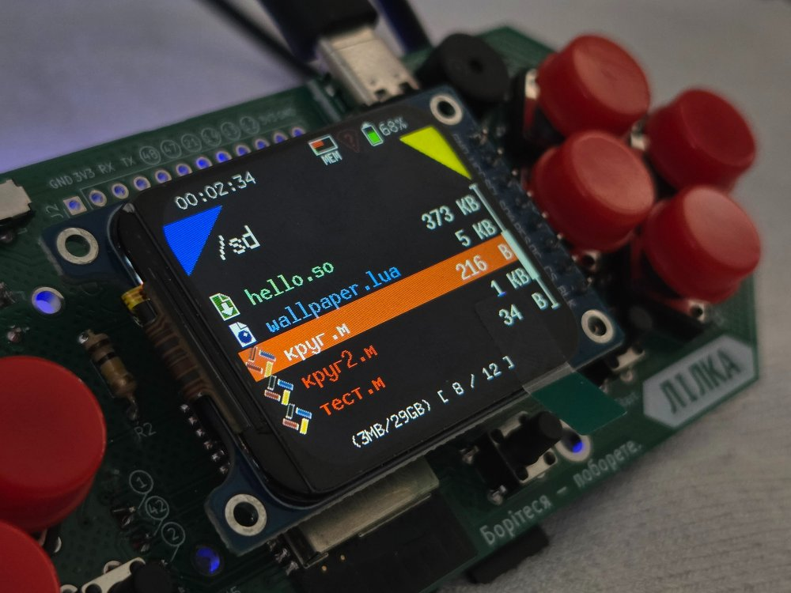

ЛіМавка це прошивка на основі KeiraOS з підтримкою української мови програмування Мавка для української саморобної консолі Лілка.
ЛіМавка надає можливість писати програми для Лілки повністю українською мовою!
Посилання:
Завантажити прошивку ЛіМавка
Приклад програми Мавкою
GitHub ЛіМавки